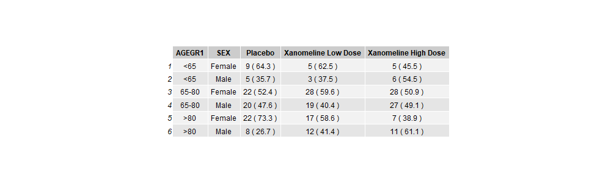

2Mini-project 2 - Summarising continuous and categorical data
Author
Mike K Smith
Published
February 13, 2023
3 Build familiarity with R coding & generate Counts and Percentages of categorical variables by Gender
In this project we are working towards creating a demography summary table like this one: 
Ours won’t look exactly like this, but we will be trying to mimic the structure of this table.
3.1 Aims:
Read in ADSL SAS (xpt) dataset
Subset for Efficacy Analysis Population
Count observations within grouping variables and calculate percentages of total N
Transpose the resulting data to prepare for tabulation
3.2 How to use this document:
In this document you’ll see code chunks (typically on a light grey background) and text. This is an example of an “Rmarkdown” document. You can write and run code within the document and the results will be presented underneath each code chunk. You should follow the instructions as written in the text, amending the code chunks, then running them to produce the outputs as instructed.
3.3 Data Source
For these projects we are using anonymized CDISC datasets, which can be found here: https://github.com/phuse-org/phuse-scripts/tree/master/data/adam/cdisc
3.4 R objects and functions
Within R we typically use objects of different types e.g. data, vectors, lists etc. and then we apply functions. Functions have the construct <function_name>(<argument1>= , <argument2> = ). When you use functions, you don’t have to use the argument name and instead you can implicitly refer to the arguments by position e.g. myFunction(foo, 1, "bar") passes in the R object foo as the value for argument 1; argument 2 takes the value 1 and argument 3 takes the character value "bar". While you’re learning R we recommend that you explicitly name and use the arguments in functions, except where functions only have one argument. You can use the tab-completion in the RStudio IDE to help complete function call arguments. To see the arguments of a function type ?<functionName> in the Console.
3.5 Start the mini project
The following steps will load the packages tidyverse, rio, skimr and htmlTable. You need to load packages before using the functions and content in them, and it’s best to do so at the beginning of a program / script. Run the chunk below by clicking on the green arrow to the right of the code chunk.
library(tidyverse)
── Attaching core tidyverse packages ──────────────────────── tidyverse 2.0.0 ──
✔ dplyr 1.1.4 ✔ readr 2.1.5
✔ forcats 1.0.0 ✔ stringr 1.5.1
✔ ggplot2 3.5.2 ✔ tibble 3.3.0
✔ lubridate 1.9.4 ✔ tidyr 1.3.1
✔ purrr 1.0.4
── Conflicts ────────────────────────────────────────── tidyverse_conflicts() ──
✖ dplyr::filter() masks stats::filter()
✖ dplyr::lag() masks stats::lag()
ℹ Use the conflicted package (<http://conflicted.r-lib.org/>) to force all conflicts to become errors
library(rio)
Read in the CDISC adsl data from the GitHub location (https://github.com/phuse-org/phuse-scripts/raw/master/data/adam/cdisc/adsl.xpt) and assign this to an object in R using the assignment operator <-. Make sure that the URL location is a character string by enclosing it in " ". The rio package has a function called import that reads data into R and infers the data type from the file name. The first argument of that function is file. Paste the file path / URL above after the file= argument in the code below, then run the chunk using the green arrow.
adsl <-import(file ="./data/adsl.xpt")head(adsl)
STUDYID USUBJID SUBJID SITEID SITEGR1 ARM
1 CDISCPILOT01 01-701-1015 1015 701 701 Placebo
2 CDISCPILOT01 01-701-1023 1023 701 701 Placebo
3 CDISCPILOT01 01-701-1028 1028 701 701 Xanomeline High Dose
4 CDISCPILOT01 01-701-1033 1033 701 701 Xanomeline Low Dose
5 CDISCPILOT01 01-701-1034 1034 701 701 Xanomeline High Dose
6 CDISCPILOT01 01-701-1047 1047 701 701 Placebo
TRT01P TRT01PN TRT01A TRT01AN TRTSDT
1 Placebo 0 Placebo 0 2014-01-02
2 Placebo 0 Placebo 0 2012-08-05
3 Xanomeline High Dose 81 Xanomeline High Dose 81 2013-07-19
4 Xanomeline Low Dose 54 Xanomeline Low Dose 54 2014-03-18
5 Xanomeline High Dose 81 Xanomeline High Dose 81 2014-07-01
6 Placebo 0 Placebo 0 2013-02-12
TRTEDT TRTDUR AVGDD CUMDOSE AGE AGEGR1 AGEGR1N AGEU RACE RACEN SEX
1 2014-07-02 182 0.0 0 63 <65 1 YEARS WHITE 1 F
2 2012-09-01 28 0.0 0 64 <65 1 YEARS WHITE 1 M
3 2014-01-14 180 77.7 13986 71 65-80 2 YEARS WHITE 1 M
4 2014-03-31 14 54.0 756 74 65-80 2 YEARS WHITE 1 M
5 2014-12-30 183 76.9 14067 77 65-80 2 YEARS WHITE 1 F
6 2013-03-09 26 0.0 0 85 >80 3 YEARS WHITE 1 F
ETHNIC SAFFL ITTFL EFFFL COMP8FL COMP16FL COMP24FL DISCONFL
1 HISPANIC OR LATINO Y Y Y Y Y Y
2 HISPANIC OR LATINO Y Y Y N N N Y
3 NOT HISPANIC OR LATINO Y Y Y Y Y Y
4 NOT HISPANIC OR LATINO Y Y Y N N N Y
5 NOT HISPANIC OR LATINO Y Y Y Y Y Y
6 NOT HISPANIC OR LATINO Y Y Y N N N Y
DSRAEFL DTHFL BMIBL BMIBLGR1 HEIGHTBL WEIGHTBL EDUCLVL DISONSDT DURDIS
1 25.1 25-<30 147.3 54.4 16 2010-04-30 43.9
2 Y 30.4 >=30 162.6 80.3 14 2006-03-11 76.4
3 31.4 >=30 177.8 99.3 16 2009-12-16 42.8
4 28.8 25-<30 175.3 88.5 12 2009-08-02 55.3
5 26.1 25-<30 154.9 62.6 9 2011-09-29 32.9
6 Y 30.4 >=30 148.6 67.1 8 2009-07-26 42.0
DURDSGR1 VISIT1DT RFSTDTC RFENDTC VISNUMEN RFENDT
1 >=12 2013-12-26 2014-01-02 2014-07-02 12 2014-07-02
2 >=12 2012-07-22 2012-08-05 2012-09-02 5 2012-09-02
3 >=12 2013-07-11 2013-07-19 2014-01-14 12 2014-01-14
4 >=12 2014-03-10 2014-03-18 2014-04-14 5 2014-04-14
5 >=12 2014-06-24 2014-07-01 2014-12-30 12 2014-12-30
6 >=12 2013-01-22 2013-02-12 2013-03-29 6 2013-03-29
DCDECOD DCREASCD MMSETOT
1 COMPLETED Completed 23
2 ADVERSE EVENT Adverse Event 23
3 COMPLETED Completed 23
4 STUDY TERMINATED BY SPONSOR Sponsor Decision 23
5 COMPLETED Completed 21
6 ADVERSE EVENT Adverse Event 23
Note that the adsl data object has 254 rows and 48 columns.
Now create a new data object adsl_eff for Efficacy Analysis population. We need to filter the adsl data object where the variable EFFFL has the value Y. Answer the question below and paste the correct answer into the code chunk.
QUICK QUIZ: Which of the following options will filter the data where the variable EFFFL has the value Y?
filter(.data = adsl, EFFFL = Y)
filter(.data = adsl, EFFFL == “Y”)
filter(.data = adsl, “EFFFL” == “Y”)
filter(.data = adsl, EFFFL = “y”)
(HINT: We also did this task in MiniProject 1)
If you are unsure, try each option by pasting in the filter statement after the assignment <- in the code chunk below.
STUDYID USUBJID SUBJID SITEID SITEGR1 ARM
1 CDISCPILOT01 01-701-1015 1015 701 701 Placebo
2 CDISCPILOT01 01-701-1023 1023 701 701 Placebo
3 CDISCPILOT01 01-701-1028 1028 701 701 Xanomeline High Dose
4 CDISCPILOT01 01-701-1033 1033 701 701 Xanomeline Low Dose
5 CDISCPILOT01 01-701-1034 1034 701 701 Xanomeline High Dose
6 CDISCPILOT01 01-701-1047 1047 701 701 Placebo
TRT01P TRT01PN TRT01A TRT01AN TRTSDT
1 Placebo 0 Placebo 0 2014-01-02
2 Placebo 0 Placebo 0 2012-08-05
3 Xanomeline High Dose 81 Xanomeline High Dose 81 2013-07-19
4 Xanomeline Low Dose 54 Xanomeline Low Dose 54 2014-03-18
5 Xanomeline High Dose 81 Xanomeline High Dose 81 2014-07-01
6 Placebo 0 Placebo 0 2013-02-12
TRTEDT TRTDUR AVGDD CUMDOSE AGE AGEGR1 AGEGR1N AGEU RACE RACEN SEX
1 2014-07-02 182 0.0 0 63 <65 1 YEARS WHITE 1 F
2 2012-09-01 28 0.0 0 64 <65 1 YEARS WHITE 1 M
3 2014-01-14 180 77.7 13986 71 65-80 2 YEARS WHITE 1 M
4 2014-03-31 14 54.0 756 74 65-80 2 YEARS WHITE 1 M
5 2014-12-30 183 76.9 14067 77 65-80 2 YEARS WHITE 1 F
6 2013-03-09 26 0.0 0 85 >80 3 YEARS WHITE 1 F
ETHNIC SAFFL ITTFL EFFFL COMP8FL COMP16FL COMP24FL DISCONFL
1 HISPANIC OR LATINO Y Y Y Y Y Y
2 HISPANIC OR LATINO Y Y Y N N N Y
3 NOT HISPANIC OR LATINO Y Y Y Y Y Y
4 NOT HISPANIC OR LATINO Y Y Y N N N Y
5 NOT HISPANIC OR LATINO Y Y Y Y Y Y
6 NOT HISPANIC OR LATINO Y Y Y N N N Y
DSRAEFL DTHFL BMIBL BMIBLGR1 HEIGHTBL WEIGHTBL EDUCLVL DISONSDT DURDIS
1 25.1 25-<30 147.3 54.4 16 2010-04-30 43.9
2 Y 30.4 >=30 162.6 80.3 14 2006-03-11 76.4
3 31.4 >=30 177.8 99.3 16 2009-12-16 42.8
4 28.8 25-<30 175.3 88.5 12 2009-08-02 55.3
5 26.1 25-<30 154.9 62.6 9 2011-09-29 32.9
6 Y 30.4 >=30 148.6 67.1 8 2009-07-26 42.0
DURDSGR1 VISIT1DT RFSTDTC RFENDTC VISNUMEN RFENDT
1 >=12 2013-12-26 2014-01-02 2014-07-02 12 2014-07-02
2 >=12 2012-07-22 2012-08-05 2012-09-02 5 2012-09-02
3 >=12 2013-07-11 2013-07-19 2014-01-14 12 2014-01-14
4 >=12 2014-03-10 2014-03-18 2014-04-14 5 2014-04-14
5 >=12 2014-06-24 2014-07-01 2014-12-30 12 2014-12-30
6 >=12 2013-01-22 2013-02-12 2013-03-29 6 2013-03-29
DCDECOD DCREASCD MMSETOT
1 COMPLETED Completed 23
2 ADVERSE EVENT Adverse Event 23
3 COMPLETED Completed 23
4 STUDY TERMINATED BY SPONSOR Sponsor Decision 23
5 COMPLETED Completed 21
6 ADVERSE EVENT Adverse Event 23
After filtering out the data we now have 234 rows and 48 columns.
Again, recall that R is case-sensitive. Most variable names in SAS datasets are uppercase, so we need to ensure that the variable name is UPPERCASE i.e. EFFFL and not Efffl etc. Also, since the value is character, we need to ensure that the case of the equivalent value matches the expected result i.e. Y and not y or Yes and that it is enclosed in quotes " ".
DEFENSIVE PROGRAMMING in R: If you’re dealing with data where you can’t guarantee that the value is upper case or lower case, then it’s a good idea to convert the values to uppercase before you compare using the casefold() function wrapped around the variable name i.e. casefold(EFFFL, upper=TRUE) == "Y"
Calculate the marginal totals (N) - count the number of individuals in each treatment group.
Next we need to count and save the marginal totals (big N) to act as the denominator for the calculation of the percentage of observations in each table cell = n/N * 100%
In the R chunk below, we start with the adsl_eff dataset and count the number of observations in each level of the variables specified in the group_by() function.
R for SAS users: The group_by() function works a lot like a BY ; statement in SAS. Everything you do after a group_by() will be done for each level of the variables within the group_by().
In the next code chunk we want to calculate the number of observations within each level of the treatment variable TRT01A. The {dplyr} package has a function called count() that will do just that. Add the treatment variable TRT01A to the group_by() function in the code below to calculate the number of observations for each treatment group.
adsl_eff %>%group_by(TRT01A) %>%count(name ="N")
# A tibble: 3 × 2
# Groups: TRT01A [3]
TRT01A N
<chr> <int>
1 Placebo 79
2 Xanomeline High Dose 74
3 Xanomeline Low Dose 81
What happens if you comment out the group_by() statement in the code above? (HINT: Comment out code using # at the start of the line to be commented, or place the cursor on the line / highlight the line and use the shortcut CTRL+SHIFT+C).
Whenever you use group_by() R will carry along the grouping variables into the output. In this example, it’s useful to have both the numeric value for the treatment in period 1 TRT01ANand the label TRT01A. This is because we will want to use the numeric value for sorting, and the label for printing in the final table. Notice in this case since there is a 1:1 relationship between TRT01AN and TRT01A we get the same answer as before.
Next we want to calculate the “small n” counts within each category of the SEX variable within each treatment arm.
If we add the additional variable into the group_by() then we calculate the count of observations for each unique combination of the levels of those variables. Let’s amend the code above to add the variable SEX.
# A tibble: 6 × 4
# Groups: TRT01AN, TRT01A, SEX [6]
TRT01AN TRT01A SEX n
<dbl> <chr> <chr> <int>
1 0 Placebo F 46
2 0 Placebo M 33
3 54 Xanomeline Low Dose F 47
4 54 Xanomeline Low Dose M 34
5 81 Xanomeline High Dose F 35
6 81 Xanomeline High Dose M 39
Do we get different answers if we use the group_by() variables in a different order?
adsl_eff %>%group_by(SEX, TRT01AN, TRT01A) %>%# Changed the order of variablescount(name ="n")
# A tibble: 6 × 4
# Groups: SEX, TRT01AN, TRT01A [6]
SEX TRT01AN TRT01A n
<chr> <dbl> <chr> <int>
1 F 0 Placebo 46
2 F 54 Xanomeline Low Dose 47
3 F 81 Xanomeline High Dose 35
4 M 0 Placebo 33
5 M 54 Xanomeline Low Dose 34
6 M 81 Xanomeline High Dose 39
No. But the order of variables in columns in the output is changed.
Merging “Big_N_cnt” and “small_n_cnt” before calculating percentages…
The {dplyr} package gives R users “SQL-like” functionality to join or filter two datasets / tables using a variety of methods: left_join, right_join, inner_join, full_join, anti_join, semi_join. (See https://dplyr.tidyverse.org/articles/two-table.html for more details). If you know PROC SQL then this will be quite familiar.
In the next step we’re going to use left_join to combine the left hand dataset - small_n_cnt with the right hand dataset Big_N_cnt. This will ensure that all entries from the left hand dataset are present in the resulting data object. A little bit of care is required to think about which dataset should be on the left, and which on the right…
# A tibble: 6 × 5
# Groups: TRT01AN, TRT01A, SEX [6]
TRT01AN TRT01A SEX n N
<dbl> <chr> <chr> <int> <int>
1 0 Placebo F 46 79
2 0 Placebo M 33 79
3 54 Xanomeline Low Dose F 47 81
4 54 Xanomeline Low Dose M 34 81
5 81 Xanomeline High Dose F 35 74
6 81 Xanomeline High Dose M 39 74
Notice that rows in Big_N_cnt that have matching TRT01A and TRT01AN are matched to rows in small_n_cnt and repeated if necessary. By default the <>_join functions of {dplyr} will try to match on variable names that exist in both datasets.
If you need to, you can explicitly define which variables to join by, and identify the joining variables in each dataset:
small_n_cnt %>%left_join(Big_N_cnt, by =c("TRT01A", "TRT01AN"))
# A tibble: 6 × 5
# Groups: TRT01AN, TRT01A, SEX [6]
TRT01AN TRT01A SEX n N
<dbl> <chr> <chr> <int> <int>
1 0 Placebo F 46 79
2 0 Placebo M 33 79
3 54 Xanomeline Low Dose F 47 81
4 54 Xanomeline Low Dose M 34 81
5 81 Xanomeline High Dose F 35 74
6 81 Xanomeline High Dose M 39 74
Calculate percentages for treatment group TRT01A split by SEX.
For this step, we want to create a new column in the adsl_mrg_cnt dataset containing the percentage of observations (subjects in the trial) from each SEX within each treatment group given by TRT01A or TRT01AN. The {dplyr} package allows us to add a new variable to an existing dataset and determine its values based on existing columns using a function called mutate().
adsl_mrg_cnt %>%mutate(perc = (n/N)*100)
# A tibble: 6 × 6
# Groups: TRT01AN, TRT01A, SEX [6]
TRT01AN TRT01A SEX n N perc
<dbl> <chr> <chr> <int> <int> <dbl>
1 0 Placebo F 46 79 58.2
2 0 Placebo M 33 79 41.8
3 54 Xanomeline Low Dose F 47 81 58.0
4 54 Xanomeline Low Dose M 34 81 42.0
5 81 Xanomeline High Dose F 35 74 47.3
6 81 Xanomeline High Dose M 39 74 52.7
Note that in calculation of perc we don’t need to put quotes around the variables names n and N because within the tidyverse and {dplyr} these variable names are evaluated within the scope of the input data adsl_mrg_cnt.
Round percentages to one decimal place.
Notice that in the data above, the first two percentages have many decimal places. We probably want to round these to one decimal place for use in the table. We can use the R function round() to achieve this.
NOTE: The round() function in R has different defaults to the round function in SAS. You might find this in several places - that default options are different - leading to differences in results. Please be aware of this and investigate whether R function arguments and settings can be matched to SAS options if it’s important to ensure that the results are comparable.
To investigate this, let’s look at a few example values
x <-c(1.1, 1.499, 1.5,1.9, 2.5)round(x)
[1] 1 1 2 2 2
Notice that R rounds 1.5 and 2.5 to the nearest even values. This follows the IEC 60559 standard (see also ‘IEEE 754’). That is, it’s not wrong, it’s just different to SAS. Be aware of this, check the R help for a function using e.g. ?round and also check SAS documentation to see how each tool calculates values.
There are also differences between SAS and R in calculation of percentiles / quantiles and how each handles missing data.
To round the values for our table, we want to use the round() function within mutate() function that calculates the new variable perc :
# A tibble: 6 × 6
# Groups: TRT01AN, TRT01A, SEX [6]
TRT01AN TRT01A SEX n N perc
<dbl> <chr> <chr> <int> <int> <dbl>
1 0 Placebo F 46 79 58.2
2 0 Placebo M 33 79 41.8
3 54 Xanomeline Low Dose F 47 81 58
4 54 Xanomeline Low Dose M 34 81 42
5 81 Xanomeline High Dose F 35 74 47.3
6 81 Xanomeline High Dose M 39 74 52.7
Formatting numeric values for use in tables.
When we use numeric values in tables, we want to ensure that the values in the table will have consistent presentation, so one decimal place is used for both “20.0” and “26.1” (instead of “20.0” becoming “20”). We can easily achieve this by applying print formatting and turning the numeric values into character. In R we use the format() function to achieve this. The format() function argument nsmall defines the minimal number of decimal places to be used. So setting nsmall=1 will ensure that all values are formatted to at least 1 decimal place.
# A tibble: 6 × 7
# Groups: TRT01AN, TRT01A, SEX [6]
TRT01AN TRT01A SEX n N perc perc_char
<dbl> <chr> <chr> <int> <int> <dbl> <chr>
1 0 Placebo F 46 79 58.2 58.2
2 0 Placebo M 33 79 41.8 41.8
3 54 Xanomeline Low Dose F 47 81 58 58.0
4 54 Xanomeline Low Dose M 34 81 42 42.0
5 81 Xanomeline High Dose F 35 74 47.3 47.3
6 81 Xanomeline High Dose M 39 74 52.7 52.7
Notice in this output that the column perc is of type <dbl> while perc_char is of type <char>. Anything that is is character type in R will not be further formatted and will display “as is” in a table or listing.
Paste together the count and percentage
For presentation in the table, we usually want to show both the count and its associated percentage. Now that we have the perc_char character variable, this is easy using R’s paste() and paste0() functions. These two functions work identically in pasting together character strings and variables, but paste() has a default separator of a single space, while paste0() has no separator.
Can you predict what you’ll see for each of the code chunks below? Have a think first then run the code to check whether you’re right.
n <-6perc_char <-"26.1"paste(n, "(",perc_char,")")
[1] "6 ( 26.1 )"
paste(n, paste0("(",perc_char,")"))
[1] "6 (26.1)"
paste(n, "(",perc_char,")", sep="")
[1] "6(26.1)"
paste0(n, "(",perc_char,")")
[1] "6(26.1)"
paste0(n, " (",perc_char,")")
[1] "6 (26.1)"
I think that it’s clearer to combine paste with paste0 rather than add additional whitespace to characters (which is easy to overlook) or changing the separator (which is another argument).
# A tibble: 6 × 8
# Groups: TRT01AN, TRT01A, SEX [6]
TRT01AN TRT01A SEX n N perc perc_char npct
<dbl> <chr> <chr> <int> <int> <dbl> <chr> <chr>
1 0 Placebo F 46 79 58.2 58.2 46 (58.2)
2 0 Placebo M 33 79 41.8 41.8 33 (41.8)
3 54 Xanomeline Low Dose F 47 81 58 58.0 47 (58.0)
4 54 Xanomeline Low Dose M 34 81 42 42.0 34 (42.0)
5 81 Xanomeline High Dose F 35 74 47.3 47.3 35 (47.3)
6 81 Xanomeline High Dose M 39 74 52.7 52.7 39 (52.7)
Note that in the last line of the chunk above, the code has been formatted carefully to make it clear which brackets and parts of the paste() functions go together. This is a style decision, but making your code easy for others to read and understand helps enormously when it comes to code review. You can find a code style guide here https://style.tidyverse.org/.
Change the SEX labels to something more readable.
At the minute we have values in the SEX variable of “M” and “F”. Now, while this is probably fairly obvious to most, it’s going to be more interpretable if we change these to “Male” and “Female”. This is a fairly simple recoding exercise. {dplyr} has a few options for recoding, but here we’re going to use the recode()function. We need to use this within a mutate() function call. In this case we can reuse the same column name.
The recode() function will leave any values not included in the left-hand of the <old> = <new>as is. The function case_when() allows you to recode with a “catch-all” option (essentially like a sequence of if… elseif… else … statements) and may be more useful in certain circumstances. In this instance with only two values, it’s easier to use recode().
# A tibble: 6 × 8
# Groups: TRT01AN, TRT01A, SEX [6]
TRT01AN TRT01A SEX n N perc perc_char npct
<dbl> <chr> <chr> <int> <int> <dbl> <chr> <chr>
1 0 Placebo Female 46 79 58.2 58.2 46 (58.2)
2 0 Placebo Male 33 79 41.8 41.8 33 (41.8)
3 54 Xanomeline Low Dose Female 47 81 58 58.0 47 (58.0)
4 54 Xanomeline Low Dose Male 34 81 42 42.0 34 (42.0)
5 81 Xanomeline High Dose Female 35 74 47.3 47.3 35 (47.3)
6 81 Xanomeline High Dose Male 39 74 52.7 52.7 39 (52.7)
Ungroup
Notice in the data above is still showing that there are groups defined Groups: TRT01AN, TRT01A, SEX [6].
Before we do the next thing, it’s going to be a good idea to “turn off” grouping, otherwise R is going to try to do the next action for each value of the grouping variables.
adsl_mrg_cnt %>%ungroup()
# A tibble: 6 × 5
TRT01AN TRT01A SEX n N
<dbl> <chr> <chr> <int> <int>
1 0 Placebo F 46 79
2 0 Placebo M 33 79
3 54 Xanomeline Low Dose F 47 81
4 54 Xanomeline Low Dose M 34 81
5 81 Xanomeline High Dose F 35 74
6 81 Xanomeline High Dose M 39 74
Using the pipe to chain these steps together.
In steps 6, 7, 8 and 9 we have looked at R chunks that merge the data, calculate and format the values for the table. But in each, we’re not particularly interested in saving the intermediate datasets or having to name them. So we can use the pipe function to combine these into one pipeline. In the chunk below, copy and paste the steps below in the right order to get the final data ready for presenting in the table. We have included an additional select() to pick out just the variables needed for the table. The first line should assign the output of the pipeline to the data object adsl_mrg_cnt… (HINT: It may help to say the {dplyr} function name of each step to yourself and think of %>% as “…THEN…” to describe the sequence of steps you need to do)
# Display this data so we can check ithead(adsl_mrg_cnt)
# A tibble: 6 × 3
TRT01A SEX npct
<chr> <chr> <chr>
1 Placebo Female 46 ( 58.2 )
2 Placebo Male 33 ( 41.8 )
3 Xanomeline Low Dose Female 47 ( 58.0 )
4 Xanomeline Low Dose Male 34 ( 42.0 )
5 Xanomeline High Dose Female 35 ( 47.3 )
6 Xanomeline High Dose Male 39 ( 52.7 )
Transpose the data ready for the table
This gets us to the point where the data is ready for the table, but we need to arrange the layout to match our expected table format. To do that we need to transpose the data, and to do this we use the {tidyr} package function pivot_wider(). For pivot_wider() you need to tell the function which columns provide names of the new (pivoted) columns - names_from and which columns provide the values for these columns - values_from.
3.6 Challenge 1: You need to complete this challenge to be able to create the final demog table.
Repeat the steps above, but add an additional grouping variable to the calculation of Big_N_cnt and small_n_cnt - AGEGRP. Here’s the first step:
# Challenge 1: Repeat steps with AGEGRPadsl_saf <- adsl %>%filter(SAFFL =='Y')# 1. Calculate Big_N_cnt with AGEGR1N and AGEGR1Big_N_cnt_agegrp <- adsl_saf %>%group_by(TRT01AN, TRT01A, AGEGR1N, AGEGR1) %>%count(name ="N")print("Big N with Age Group:")
# 2. Calculate small_n_cnt with SEX and AGEGR1N/AGEGR1small_n_cnt_agegrp <- adsl_saf %>%group_by(TRT01AN, TRT01A, AGEGR1N, AGEGR1, SEX) %>%count(name ="n")print("Small n with Age Group and Sex:")
[1] "Small n with Age Group and Sex:"
print(small_n_cnt_agegrp)
# A tibble: 18 × 6
# Groups: TRT01AN, TRT01A, AGEGR1N, AGEGR1, SEX [18]
TRT01AN TRT01A AGEGR1N AGEGR1 SEX n
<dbl> <chr> <dbl> <chr> <chr> <int>
1 0 Placebo 1 <65 F 9
2 0 Placebo 1 <65 M 5
3 0 Placebo 2 65-80 F 22
4 0 Placebo 2 65-80 M 20
5 0 Placebo 3 >80 F 22
6 0 Placebo 3 >80 M 8
7 54 Xanomeline Low Dose 1 <65 F 5
8 54 Xanomeline Low Dose 1 <65 M 3
9 54 Xanomeline Low Dose 2 65-80 F 28
10 54 Xanomeline Low Dose 2 65-80 M 19
11 54 Xanomeline Low Dose 3 >80 F 17
12 54 Xanomeline Low Dose 3 >80 M 12
13 81 Xanomeline High Dose 1 <65 F 5
14 81 Xanomeline High Dose 1 <65 M 6
15 81 Xanomeline High Dose 2 65-80 F 28
16 81 Xanomeline High Dose 2 65-80 M 27
17 81 Xanomeline High Dose 3 >80 F 7
18 81 Xanomeline High Dose 3 >80 M 11
# 3. Create the full pipeline for adsl_mrg_cnt_agegrpadsl_mrg_cnt_agegrp <- small_n_cnt_agegrp %>%left_join(Big_N_cnt_agegrp, by =c("TRT01AN", "TRT01A", "AGEGR1N", "AGEGR1")) %>%mutate(perc =round((n/N)*100, digits=1)) %>%mutate(perc_char =format(perc, nsmall=1)) %>%mutate(npct =paste(n, "(", perc_char, ")" ) ) %>%mutate(SEX =recode(SEX, "M"="Male", "F"="Female")) %>%ungroup() %>%# Select the relevant columns for your final table, including AGEGR1select(TRT01A, AGEGR1, SEX, npct) %>%# Optional: Arrange for better presentationarrange(TRT01A, AGEGR1, SEX)print("Final Merged and Processed Data for Challenge 1:")
[1] "Final Merged and Processed Data for Challenge 1:"
To check that your code is reproducible, you will want to use the “knit” button on the RStudio IDE interface to create an HTML file based on your saved .Rmd file. If your code chunks are reproducible then you should get an HTML file as a result. If NOT (if there’s an error or if the “knit” process fails) then click on the arrow to the right of the “Run” button and select “Restart R and Run All Chunks”. Then troubleshoot which chunk is causing problems.
3.7 Challenge 2:
Generate Counts and Percentages of Body Text Term (AEBODSYS) for Safety Population (SAFFL) based on the this CDISC dataset: adae.xpt. Save the .RMD file on your desktop and click on the “Knit” button at the top of the file to render an HTML version of this document.
# 1. Read in the adae dataadae <-import(file ="./data/adae.xpt")# 2. Filter for Safety Population (SAFFL == 'Y')adae_saf <- adae %>%filter(SAFFL =='Y')# 3. Calculate Big_N for adae_saf (total N per treatment for safety)# Select only necessary columns from adsl to avoid conflicts and keep relevant infoadsl_trt_info <- adsl %>%select(USUBJID, TRT01AN, TRT01A)# Perform a left join to add treatment info to adae_safadae_saf_with_trt <- adae_saf %>%left_join(adsl_trt_info, by ="USUBJID")# 4. Calculate small_n (counts of AEBODSYS within each treatment arm)Big_N_adae <- adae_saf_with_trt %>%group_by(TRT01AN, TRT01A) %>%summarise(N =n_distinct(USUBJID), .groups ='drop') # Count distinct subjects per treatment# .groups = 'drop' removes grouping at the endsmall_n_adae <- adae_saf_with_trt %>%group_by(TRT01AN, TRT01A, AEBODSYS) %>%count(name ="n") %>%# Counts occurrences of each AEBODSYS within each treatment groupungroup() # Ungroup temporarily for clearer view before final pipelineadae_table_data <- small_n_adae %>%left_join(Big_N_adae, by =c("TRT01AN", "TRT01A")) %>%mutate(perc =round((n/N)*100, digits=1)) %>%mutate(perc_char =format(perc, nsmall=1)) %>%mutate(npct =paste0(n, " (", perc_char, "%)")) %>%# Common format: n (perc%)ungroup() %>%# Select the relevant columns for your final tableselect(TRT01A, AEBODSYS, npct) %>%# Arrange for better presentation (first by treatment numeric, then by AEBODSYS)# We need TRT01AN temporarily back for sorting correctly.left_join(select(Big_N_adae, TRT01AN, TRT01A), by ="TRT01A") %>%arrange(TRT01AN, AEBODSYS) %>%select(-TRT01AN) # Remove TRT01AN after sortinghead(adae_table_data)